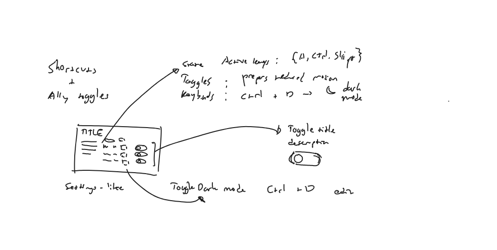
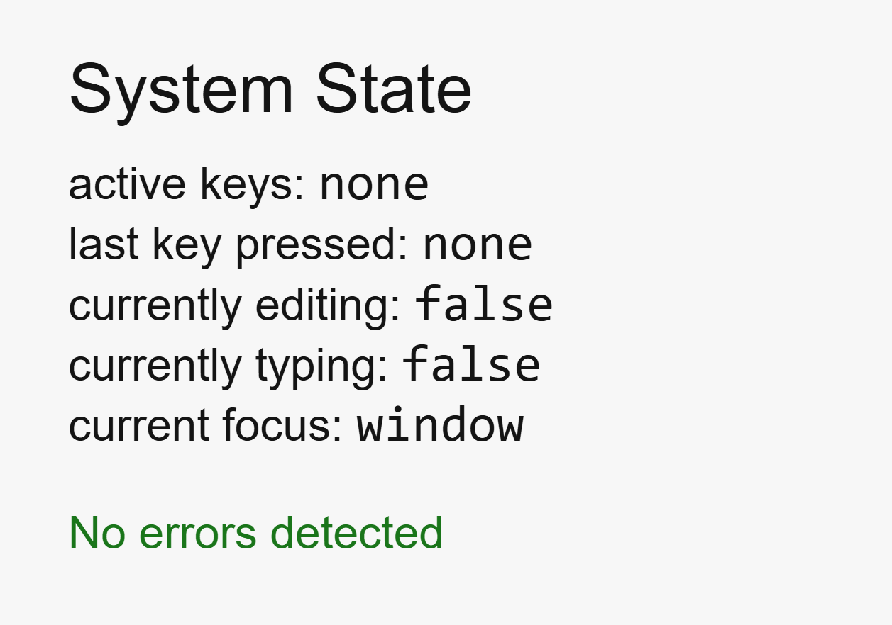
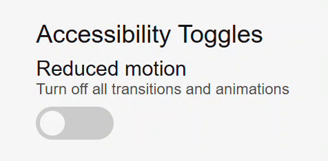

Keybinds and accessibility demo
Many apps often treat customization and accessibility as secondary priorities.
This project is my attempt at writing a system where personalization is treated as the primary concern.
It features shortcut customization and accessibility toggles within a minimal, functionality-first interface.
Although the scope is small, the underlying logic can be applied to much larger systems, especially ones that rely on keyboard-first workflows.
Goal
The main goal was to build an isolated system that handles keyboard input and state transitions reliably.
An exploratory sketch from the early stages of development.
Rather than a product or design exercise, I treated the project as an engineering problem.
The core logic: customizable shortcuts, accessibility toggles, and different input modes are prioritized before visual polish.
This allowed the interface to serve as an extension of the system, communicating the underlying behavior clearly.
Constraints
I decided on three core constraints:
First, keyboard input must be the primary driver of state.
Second, the system's internal workings must be communicated in real-time.
Third, use of external frameworks, libraries or other forms of abstraction is not allowed.
These constraints forced the system to account for all interactions without relying on external dependencies.
Core problem
The central challenge was keeping the system functional across different input modes.
Keyboard-driven systems often collapse when multiple different contexts coexist.
Simultaneously listening for shortcuts, typing into inputs, and editing keybindings can introduce conflicting responses and interfere with assistive technologies.
The system must be able to correctly transition between modes, distinguish between intent, and be transparent about its capabilities and limitations.
This avoids duplicated or unnecessarily complex logic, and allows users to easily recover upon making a mistake.
Key decisions
State transparency
State is not treated as purely implementation detail; the system makes all state explicit and observable.
Active keys, editing modes, focus targets, and error states are displayed directly to the UI.
Deterministic behavior
All actions, regardless of whether it is governed by logic or styling, are executed immediately without any delay or partial state change.
This makes for a predictable system: given the same input, the result is always the same.
A reduced motion toggle immediately removing the toggle's transition when clicked.
Mode-based responses
The intent of various inputs are inferred through modes, not through timing or pattern-matching.
All modes are controlled and have clear entry and exit points, improving modularity and predictability.
Providing a fallback
Features that involve a keyboard, such as shortcut editing, are disabled on touch-only devices.
This was a design decision rooted in system integrity.
For interactions that lack support, removal is better than an imperfect simulation.
Result
The final outcome is an interface that showcases personalization through keyboard-first interactions and accessibility features.